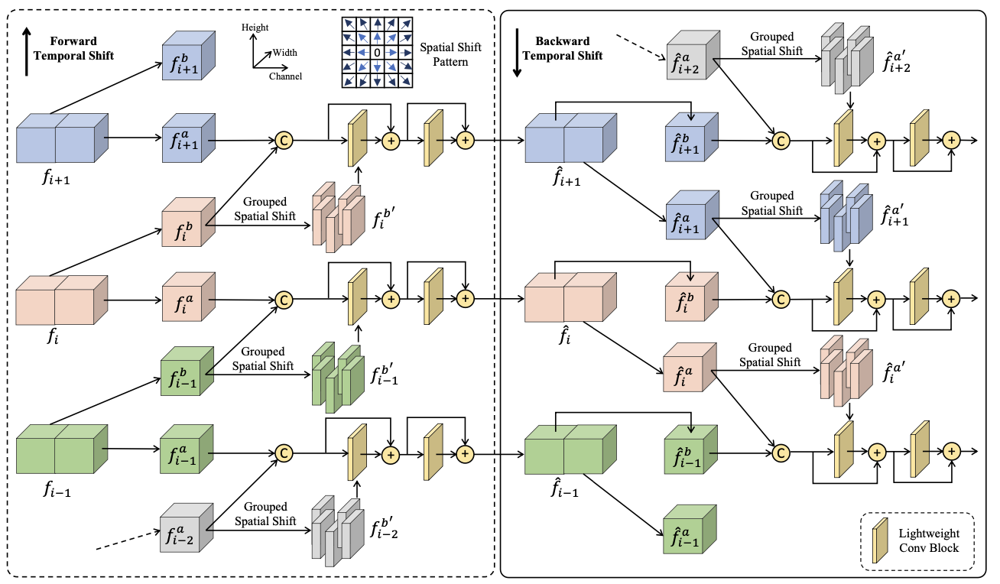
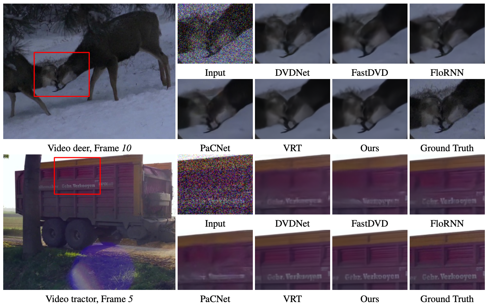

1The Chinese University of Hong Kong
2SenseTime Research
3NVIDIA AI Technology Center
4Centre for Perceptual and Interactive Intelligence Limited
Video restoration, which aims to restore clear frames from degraded videos, has numerous important applications. The key to video restoration depends on utilizing inter-frame information. However, existing deep learning methods often rely on complicated network architectures, such as optical flow estimation, deformable convolution, and cross-frame self-attention layers, resulting in high computational costs. In this study, we propose a simple yet effective framework for video restoration. Our approach is based on grouped spatial-temporal shift, which is a lightweight and straightforward technique that can implicitly capture inter-frame correspondences for multiframe aggregation. By introducing grouped spatial shift, we attain expansive effective receptive fields. Combined with basic 2D convolution, this simple framework can effectively aggregate inter-frame information. Extensive experiments demonstrate that our framework outperforms the previous state-of-the-art method, while using less than a quarter of its computational cost, on both video deblurring and video denoising tasks. These results indicate the potential for our approach to significantly reduce computational overhead while maintaining high-quality results.
PSNR-Params-FLOPS comparisons with other state-of-the-art methods on video deblurring. Our models have fewer parameters (disk sizes) and occupy the top-left corner, indicating superior performances (PSNR on y-axis) with less com- putational cost (FLOPS on x-axis).
We provide a video comparison of our proposed grouped shift-Net with those of VRT on the GoPro dataset.
Motivation
Video restoration, by nature, requires aggregating information from the temporal dimension. Two decisive functionalities and challenges of video restoration are alignment and information aggregation across frames. The keys of various video restoration network lie in how to design different network components to realize the two functionalities. For inter-frame alignment, most previous video restoration methods resort to explicit alignment to establish temporal correspondences across frames, such as using optical flow and deformable convolution. However, using such techniques incurs more computational cost and memory consumption. They might also fail in the scenarios of large displacements, noise, and blurry regions. Several methods utilize convolutional networks to fuse multiple frames without explicit inter-frame alignment, which generally show poorer performances. Information aggregation across frames is mostly dominated by recurrent frameworks. However, the misalignments and faulty prediction can be accumulated across time and the methods are usually difficult to be parallelized for efficient inference. Recently, transformer architectures emerge as promising alternatives. Video restoration transformer (VRT) is proposed for modeling long-range dependency with attention mechanism. Nevertheless, VRT has a very large number of self-attention layers and is computationally costly.
Overall framework
In this study, we propose a simple, fast, and effective spatial-temporal shift module to implicitly model temporal correspondences across time. We introduce Group Shift-Net, which is equipped with the proposed spatial-temporal shift module for alignment and basic 2D U-Nets as the frame-wise encoder and decoder. Such a simple yet effective framework is able to model long-term dependency without utilizing resource-demanding optical flow estimation, deformable convolution, recurrent methods, or temporal transformers. Our Group Shift-Net adopts a three-stage design: 1) frame-wise pre-restoration, 2) multi-frame fusion with grouped spatial-temporal shift, and 3) frame-wise restoration.
Network Architecture
For the network of frame-wise pre-restoration of stage 1 and final restoration of stage 3, it is observed that a single U-Net-like structure cannot restore the frames well. Instead, we propose to stack N 2D slim U-Nets consecutively to conduct frame-wise restoration effectively. In multi-frame fusion, each frame-wise feature is to be fully aggregated with neighboring features to obtain the temporally aligned and fused features. we stack multiple GSTS blocks (e.g., 6) to effectively establish temporal correspondences and conduct multi-frame fusion. A GSTS block consists of three components: 1) a temporal shift operation, 2) a spatial shift operation, and 3) a lightweight fusion layer.
Our contributions of this study are two-fold:
Quantitative comparison with state-of-the-art video deblurring methods on GoPro.
Quantitative comparison with state-of-the-art video denoising methods on Set8.
Video deblurring results on GoPro dataset. Our method recovers more details than other methods.
Video denoising results on Set8. Our method achieves better performances at reconstructing details such as textures and lines.